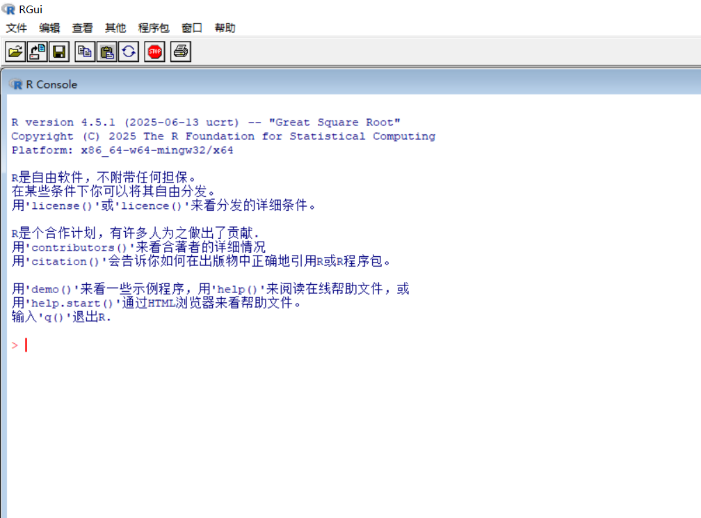
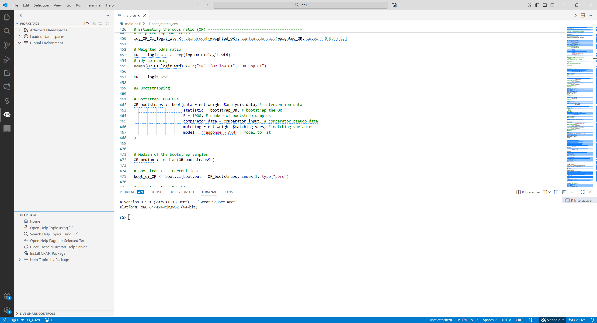
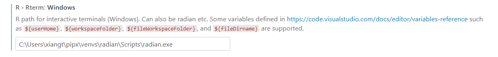
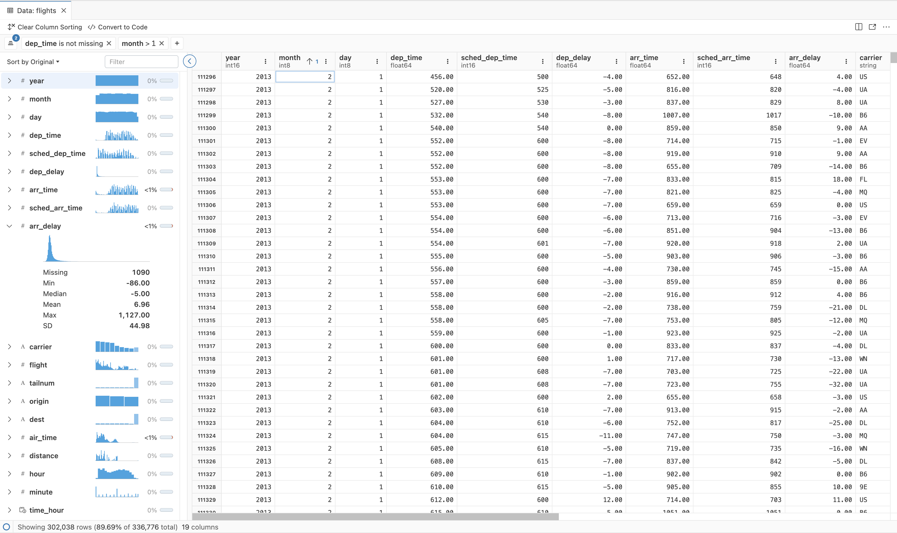
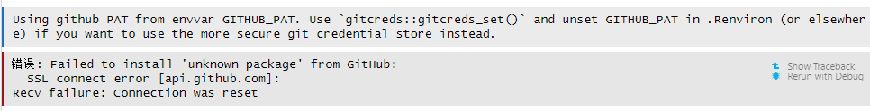
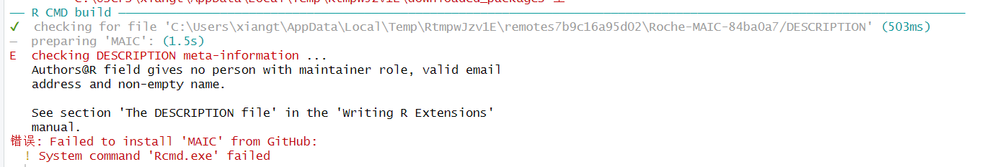

[1] 2Introduction to R Programming
IDE and Basics
Tao Xiang
2025-11-28
Outline
Installing Base-R and those IDEs
Packages
Some R Basics
Data import/export in R
Installing Base-R and those IDEs
First time to install Base-R
If windows, there you go
Open R, you can see GUI as:

If Mac OS, there you go
Install RStudio

After installed Base-R, we can download RStudio from https://posit.co/download/rstudio-desktop/
Some of the functionality that RStudio provides
- Access RStudio locally.
- Syntax highlighting, code completion, and smart indentation.
- Execute R code directly from the source editor.
- Quickly jump to function definitions.
- View content changes in real-time with the Visual Markdown Editor for RMarkdown or Quarto documents.
- Easily manage multiple working directories using Projects.
- Integrated R help and documentation.
- View Python data, publish and render in Python and share objects with R.
- Interactive debugger to diagnose and fix errors.
- Extensive package development tools.
- Easily publish apps and reports.
Classic for RStudio Windows

The four panes of RStudio
Source Pane
Source Pan is the place where you write your R Scripts with “.R” extention
Good Naming is low case for scripting name and upper case for extention, eg. “km_plot.R”
Don’t worry if RStudio crashes, R will have your code waiting as unsaved status for you when you re-open RStudio.
R Kernal in Console
R actually evaluate code in R Console with character prompt
>.R Console in RStudio have code completion features.
Your workspace is showed on top left of Console.
Your code in Console will not be saved, develop your R code in Source Pane and press
Control + Enteron windows to source in Console
Environment and History Tab
The Environment tab of this panel shows you the names of all the data objects (like vectors, matrices, and dataframes) that you’ve defined in your current R session.
The History tab of this panel simply shows you a history of all the code you’ve previously evaluated in the Console. You can select history code to re-send to console.
Most your daily programming object are reflected in Global Environment, but
R Environmentis an advanced topic which we will not dive deep into today.
Output Pane
Files - The files panel gives you access to the file directory on your hard drive.
Plots - The Plots panel give you access to view the output plot in R session each time when you use R graphic system like grid, ggplot2, etc.
Packages pane give you access to the packages installed in your computer under this R version.
Help menu will show your information about packaged functions in search window.
Viewer is a pane to display html widget outputs
Some other panels may exist depending on your RStudio version and installed extention such as Presentation/Git.
Visual Studio Code
VS Code is a free code editor runs on most of Operating Systems, with rich source of extensions and integrated with AI freatures(GitHub Copilot)
Getting started in VS Code
- Install R(>=3.4.0) which introduced before (From CRAN).
- Install the R extension for Visual Studio Code.
- Setup for R extension and try to write code
Enhanced tools for R in VS Code (official recommendation)
R terminal in VS Code doesn’t have code completion feature in R terminal to replace R Console in RStudio.
Install radian for a better R terminal for programming.
radian
A modern R console that corrects many limitations of the official R terminal and supports many features such as syntax highlighting and auto-completion.

Requirement: R (>=3.4.0), Python (version 3.8 or above)
Installing radian via pipx would be the easiest option
# install released version
pipx install radian
# or the dev version
pipx install git+https://github.com/randy3k/radian
# to run radian
radianUse radian to replace default Rterm executable 
httpgd
- An R package to provide a graphics device that asynchronously serves SVG graphics via HTTP and WebSockets. This package is required by the interactive plot viewer of the R extension for VS Code.
Positron
Positron is the next-generation data science IDE built for Python and R which released by POSIT.
Basically it is a VS code IDE hybrid with RStudio. But Positron is more suitable for data scientists who coding with both R and Python, since people rarely write Python in RStudio even it has this ability.
The panel layout is similar with RStudio, and have guides for migrating from RStudio and VS Code.

Positron features
The product is designed to be user-friendly for both R and Python user to exploring data science.
Data explore feature is one of advantages for this IDE, the better Data Grid, Summary Panel and Filter Bar than RStudio. 
Rich Source of extensions and capable of import settings and extension from OpenVSX
Easier setup than VS Code and integrated AI Tools (Anthropic/GitHub Copilot for chat and GitHub Copilot for inline code completions)
Packages
About R Packages
All R functions and datasets are stored in packages. Only when a package is loaded are its contents available. This is done both for efficiency (the full list would take more memory and would take longer to search than a subset), and to aid package developers, who are protected from name clashes with other code.
- RTools: Rtools is only needed for installation of R packages from source or building R from source.
Choose right version for R
Install Packages
CRAN
- (Currently, the CRAN package repository features 23056 available packages. - Nov2025)
Bioconductor Packages
- (Open source and open development, most for computational biology and bioinformatics, 2361 packages - NOV2025)
- Local zipped file .gz.tar
- GitHub
pak - A Fresh Approach to R Package Installation
pak installs R packages from CRAN, Bioconductor, GitHub, URLs, git repositories, local files and directories. It is an alternative to install.packages() and devtools::install_github(). pak is fast, safe and convenient.
- Install or update packages from CRAN or Bioconductor
- Install packages from GitHub
- Install a local package and its dependencies
- Look up dependencies
tibble 3.3.0 [new][dl] (698.31 kB)
├─cli 3.6.5 [new][dl] (1.40 MB)
├─lifecycle 1.0.4 [new][dl] (141.02 kB)
│ ├─cli
│ ├─glue 1.8.0 [new][dl] (183.69 kB)
│ └─rlang 1.1.6 [new][dl] (1.63 MB)
├─magrittr 2.0.4 [new][dl] (229.05 kB)
├─pillar 1.11.1 [new][dl] (673.34 kB)
│ ├─cli
│ ├─glue
│ ├─lifecycle
│ ├─rlang
│ ├─utf8 1.2.6 [new][dl] (155.23 kB)
│ └─vctrs 0.6.5 [new][dl] (1.36 MB)
│ ├─cli
│ ├─glue
│ ├─lifecycle
│ └─rlang
├─pkgconfig 2.0.3 [new][dl] (22.81 kB)
├─rlang
└─vctrs
Key: [new] new | [dl] downloadA real case about install packages
Task: Matching Adjusted Indirect Comparison (MAIC) for study 111 in 2025, which require MAIC R packages published on https://github.com/Roche/MAIC
A real case about install packages 2
Still failed 🤦♂️
A real case about install packages 3
Why failed again? 😱

This installation failure is quite tricky and not typical. The MAIC package developing team decided to upgrade and revision package to CRAN, so the stable package on Github was superseded and package maintainer role is removed in package description file, which lead to this failure.
Use Packages
All R functions and datasets are stored in packages. Only when a package is loaded are its contents available.
To see which packages are installed at your site:
To load a particular package:
Install and Update packages:
To see which packages are currently loaded:
Namespaces
Packages have namespaces, which do three things:
- They allow the package writer to hide functions and data that are meant only for internal use
- They prevent functions from breaking when a user (or other package writer) picks a name that clashes with one in the package
- They provide a way to refer to an object within a particular package.
Two operators that work with namespaces
- Double-colon operator
::selects definitions from a particular namespace
- Double-colon operator
- The triple-colon operator
:::allows access to hidden objects
Some R Basics
R Data Type
- R has 6 basic data types
- Character
- Double
- Logical
- Integer
- Complex
- Raw
Character
- Same as SAS character string
- We can apply typeof() or class() to see the data type
- single quotes or double quotes are same when assign, but use double quotes only when character contains single quotes
Logical
- Also known as Boolean Value
- T stand for TRUE
- F stand for FALSE
- T/F can be applied to all logical values for TRUE/FALSE
- Be careful with Case-sensitive which is different with SAS, if you apply is.logical(true) to R, you will get an error to tell you object ‘true’ not found.
Integer
- 1:10 represents integer sequence 1 to 10
- the letter “L” declares this as an integer
- In R, 6 generally is double instead of integer
Double
- two integers in addition will still be integer
Complex (Unusual)
- 9 + 3i, where “i” is the imaginary part
Raw (Unusual)
- The raw data type holds raw bytes, so it is a very unusual data type.
- you could transform a character object or a integer numeric value to a raw object with the charToRaw and intToBits functions, respectively.
- Only needed when handling binary data
Data Structure
- R has many data structures. These include
- Vectors
- Lists
- Matrices
- Data frames
- Arrays
Data Structure in dimensionality
- Can be organised by their dimensionality (1d, 2d, or nd) and whether they are homogeneous or heterogeneous.
| Dimension | Homogeneous | Heterogeneous |
|---|---|---|
| 1D | Atomic vector | List |
| 2D | Matrix | Data frame |
| nD | Array |
Vectors
- Vectors come in two flavours: atomic vectors and lists and they differ in terms of their elements’ types
- For atomic vectors, all elements must have the same type
- For lists, elements can have different types
- NULL often serves the role of a generic zero length vector

Atomic vectors
- The simpler type of vector which may contains four usual data types:

Combine Values into a Vector with c()
- When the inputs are atomic vectors, c() always creates another atomic vector
Missing value
- R represents missing, or unknown values, with special sentinel value: NA
- Optionally, You can create NA of a specific type with NA_real_, NA_integer_, NA_character_
Find the missing value in vector
- Common mistake
- Test for the presence of missingness
List
- Lists are different from atomic vectors because their elememts can be of any type
- str() function to present description of any R data structure
Testing and coercion
- The typeof() a list is list. You can test for a list with is.list(), and coerce to a list with as.list()
Differences between list() and c()
- Lists are sometimes called recursive vectors because a list can contain other lists

- c() will combine several lists into one
List of 2
$ :List of 2
..$ : num 1
..$ : num 2
$ : num [1:2] 3 4
Matrices
- An examples to create a matrix, and useful functions to check the names and numbers for col/row.
C.1 C.2 C.3
row1 1 3 5
row2 2 4 6Data Frame
- A data frame is a very important data type in R. It’s pretty much the de facto data structure for most tabular data and what we use for statistics.
'data.frame': 3 obs. of 2 variables:
$ x: int 1 2 3
$ y: chr "a" "b" "c"- Check the meta-data for data frame with attr() or attributes()
Useful Data frame Functions
- head() - shows first 6 rows
- tail() - shows last 6 rows
- dim() - returns the dimensions of data frame (i.e. number of rows and number of columns)
- nrow() - number of rows
- ncol() - number of columns
- str() - structure of data frame - name, type and preview of data in each column
- names() or colnames() - both show the names attribute for a data frame
- sapply(dataframe, class) - shows the class of each column in the data frame
factors
- A factor is a vector that only contain predefined values and are used to store categorical data
Subsetting
- R’s subsetting operators are fast and powerful. However it is easy to learn but hard to master.
- There are six ways to subset atomic vectors.
- There are three subsetting operators, [[, [, and $.
- Subsetting operators interact differently with different vector types (e.g., atomic vectors, lists, factors, matrices, and data frames).
- Subsetting can be combined with assignment.
Subsetting - Atomic vectors
There are six things that you can use to subset a vector:
Positive integers return elements at the specified positions
Subsetting - Atomic vectors 2
- Negative integers exclude elements at the specified positions
Subsetting - Atomic vectors 3
- Logical vectors select elements where the corresponding logical value is TRUE. This is probably the most useful type of subsetting because you can write an expression that uses a logical vector
- recycling rules when different length
Subsetting - Atomic vectors 4
- Nothing returns the original vector
- Zero returns a zero-length vector. This is not something you usually do on purpose, but it can be helpful for generating test data
Subsetting - Atomic vectors 5
- Use character vectors to matching named vector
Subsetting - Data frame
- For each dimension, use one index separated by comma
Preserving dimensionality
- By default, subsetting a matrix or data frame with a single number, a single name, or a logical vector containing a single TRUE, will simplify the returned output, i.e. it will return an object with lower dimensionality. To preserve the original dimensionality, you must use drop = FALSE
Choices
The basic form of an if statement in R is as follows:
switch() statement
Closely related to if is the switch()-statement. It’s a compact, special purpose equivalent that lets you replace code like:
which is equivalent to:
Write loops in R
for loops are used to iterate over items in a vector. They have the following basic form:
For each item in vector, perform_action is called once; updating the value of item each time.
There are two ways to terminate a for loop early: - next exits the current iteration. - break exits the entire for loop.
Related tools
for loops are useful if you know in advance the set of values that you want to iterate over. If you don’t know, there are two related tools with more flexible specifications:
while(condition) action: performsactionwhile condition isTRUE.
a <- 1
repeat {
# starting of repeat statements block
print(a)
a <- a + 1
# ending of repeat statements block
if(a > 5) { # breaking condition
break
}
}[1] 1
[1] 2
[1] 3
[1] 4
[1] 5-repeat(action): repeats action forever (i.e. until it encounters break\).
Data import/export in R
Data input
- Read data from the work directory
- Read first two row
- Skip the first three lines
Import data by delimiter
- Comma
- Tab
- specify your own:
Import xls and xlsx files
Suggest to use readxl package
Selected sheet to read:
Read by range:
Read selected column type (options: “skip”, “guess”, “logical”, “numeric”, “date”, “text” or “list”):
Import SAS datasets into R
Suggest to use haven package:
Data Output
- Export xlsx
- Export XPT
havenpackage can write SAS transport format v5 & v8, but cannot exportsas7bdatdatasets.
Reference and R books
- If you have willing to learn more about R, please visit our workshop website https://statprogworkshop.onrender.com/ with R books selection.
Thanks